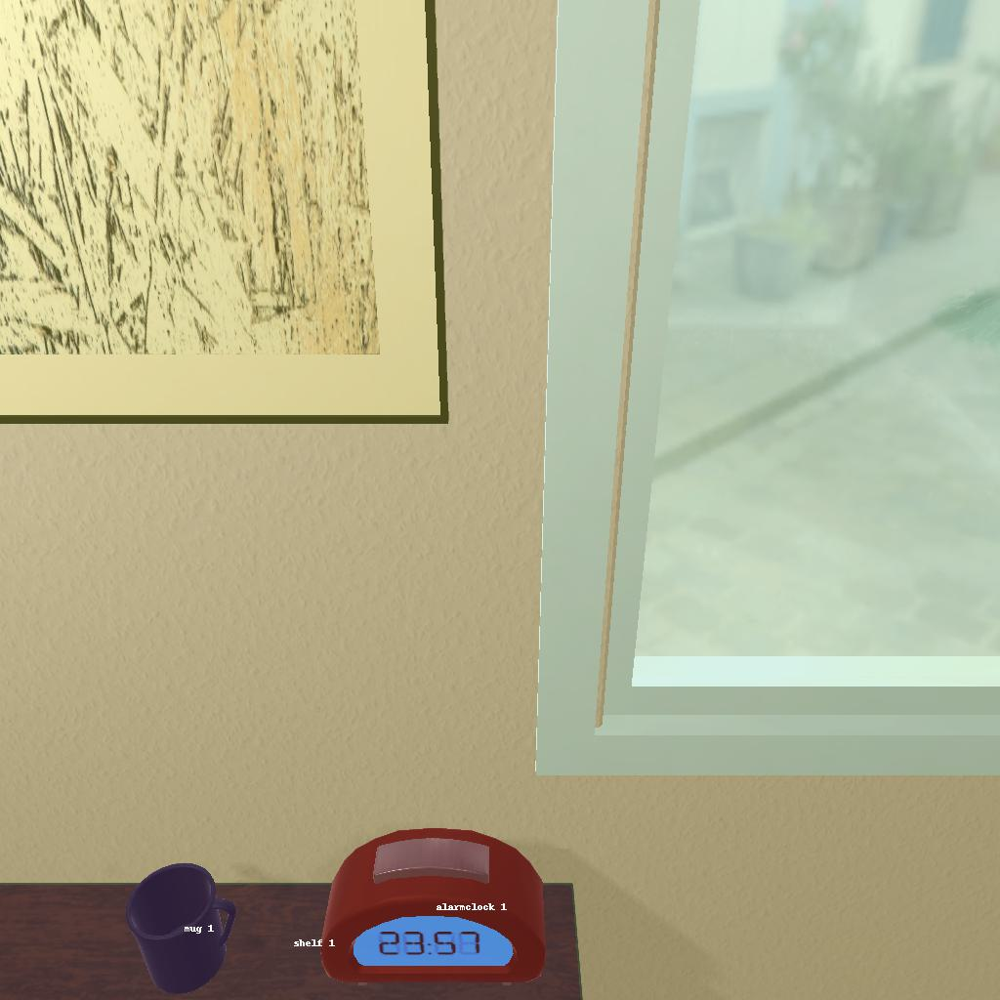

---------------------------------------------------------task: 1---------------------------------------------------------
--------------------------------------------------------------------------------------------------------------------------------------------------------------------
--------------------------------------------------------------------------------------------------------------------------------------------------------------------
Step:--------------------------------------------------------------------------3-------------------------------------------------------------------------------
----------------------------------------
VLM Prompt:
Image1:
**Instruction**
1. Analyze the provided image to identify all visible household objects, focusing on those relevant to the task description "examine the alarmclock with the desklamp."
2. Use the analysis of the image and the task hint "The agent must find an object of the desired type, locate and turn on a light source with the desired object in-hand." to answer the question: what is the most reasonable action in the choices for the task description "examine the alarmclock with the desklamp"?
4. Decide and write the answer using the template: The answer is: (i): , where i is the real number. If there is no desired object in the image, search every place based on **Initial Observation** to find the object. And if no one is exactly correct, choose a similar answer.
**Initial Observation**
You are in the middle of a room. Looking quickly around you, you can see bed (1), dresser (1), drawer (1-10), garbagecan (1), shelf (1-7)
**Answer Choices**
(1): go to bed 1
(2): go to drawer 1
(3): go to drawer 2
(4): go to drawer 3
(5): go to drawer 4
(6): go to drawer 5
(7): go to garbagecan 1
(8): go to drawer 6
(9): go to drawer 7
(10): go to drawer 8
(11): go to drawer 9
(12): go to drawer 10
(13): go to shelf 3
(14): go to shelf 4
(15): go to shelf 5
(16): go to shelf 6
(17): go to shelf 7
(18): take alarmclock 1 from shelf 1
(19): take mug 1 from shelf 1
(20): examine shelf 1
**Answer**
Let's think step by step by following the instructions.
----------------------------------------
----------------------------------------
Original Response:
First, we need to identify all visible household objects relevant to the task description "examine the alarmclock with the desklamp." In the image provided, we can see an alarm clock labeled "alarmclock 1" on a surface labeled "shelf 1." There is also a mug labeled "mug 1" on the same shelf. No desklamp is visible in the image.
The task hint tells us that the agent must find an object of the desired type, which in this case is the alarm clock, and then locate and turn on a light source with the desired object in-hand. Since the alarm clock is already visible in the image, we do not need to search every place based on the initial observation.
Therefore, the most reasonable action to take for the task description "examine the alarmclock with the desklamp" would be to first take the alarm clock into hand.
The answer is: (18): take alarmclock 1 from shelf 1.
----------------------------------------
----------------------------------------
>>> Refine Original VLM Response and Get Pure Action: take alarmclock 1 from shelf 1
----------------------------------------
-----------------------------------------------------------------
Running time: 7.471885681152344 seconds
Total Money: 0.34079000000000004
-----------------------------------------------------------------
-----------------------------------------------------------------
Text Observation:You pick up the alarmclock 1 from the shelf 1.
-----------------------------------------------------------------
UNSUCCEED